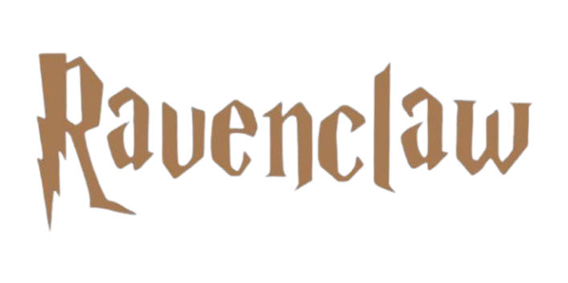
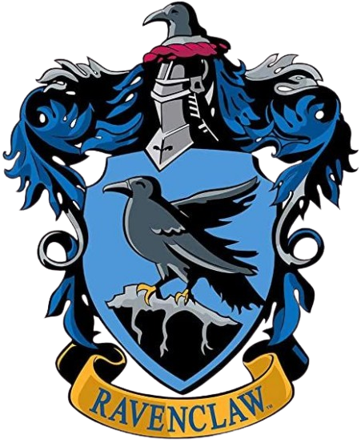
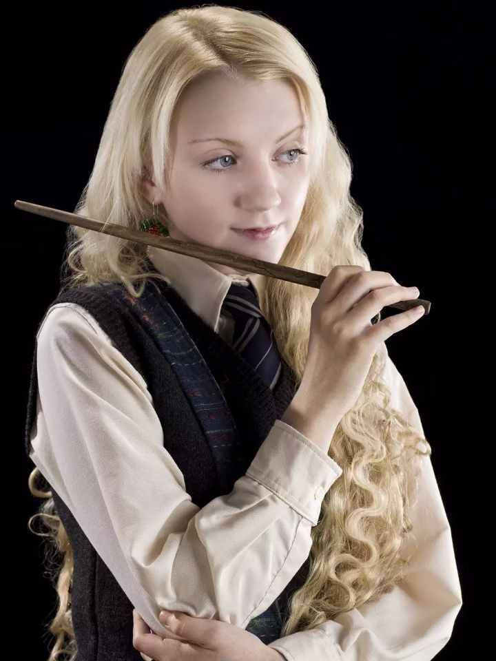
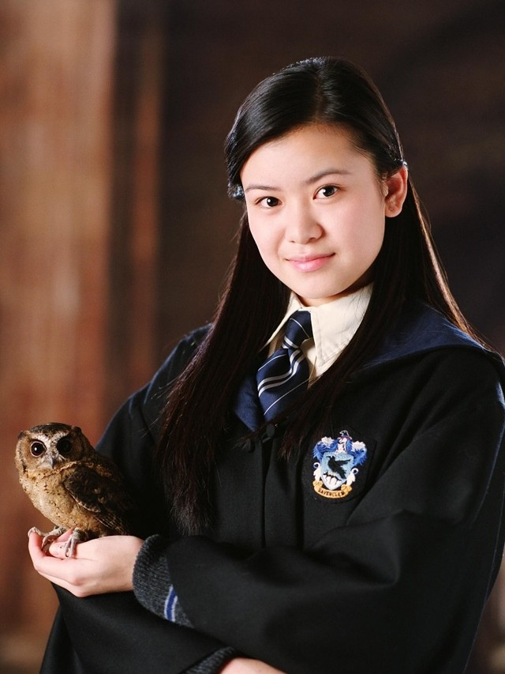
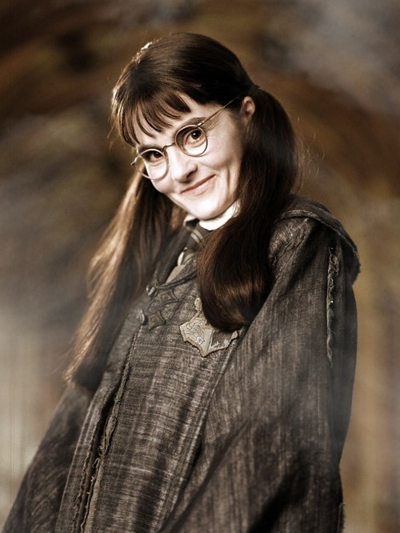
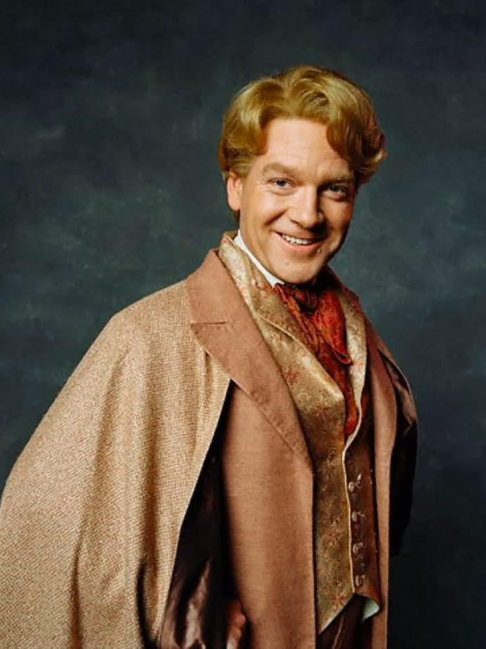
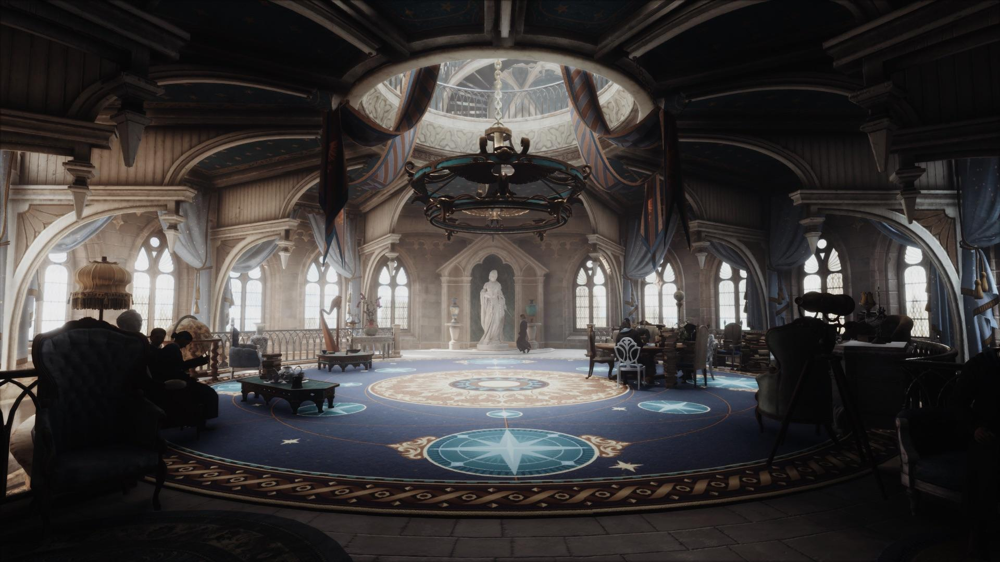

"Ou será a velha e sábia Corvinal, A casa dos que têm a mente sempre alerta, Onde os homens de grande espírito e saber Sempre encontrarão companheiros seus iguais." — O Chapéu Seletor

Diretor da Casa
Filius Flitwick

Fundadora
Rowena Ravenclaw

Cores
Azul e bronze
Os Corvinos também tendem a ser curiosos sobre o mundo e questionar tudo ao seu redor. Eles são conhecidos por terem a mente aberta e sempre ágil. Além disso, os alunos possuem inclinações relacionadas à memória.
Membros Notáveis
Luna Lovegood

Cho Chang

Murta que Geme (Murta Warren)

Gilderoy Lockhart

Sala Comunal
A sala comunal,é um dos ambientes mais arejados do castelo. Sendo também uma ampla e circular sala com graciosas janelas em formato de arco que pontuam as paredes cobertas com sedas azuis e bronze e um espesso carpete azul meia-noite coberto de estrelas, algo que se assemelha ao teto abobadado. De acordo com o monitor da casa, Robert Hilliard, o som do vento assobiando ao redor das janelas da torre é relaxante durante o sono. Retratos de famosos Corvinos estão pendurados pelas paredes.
